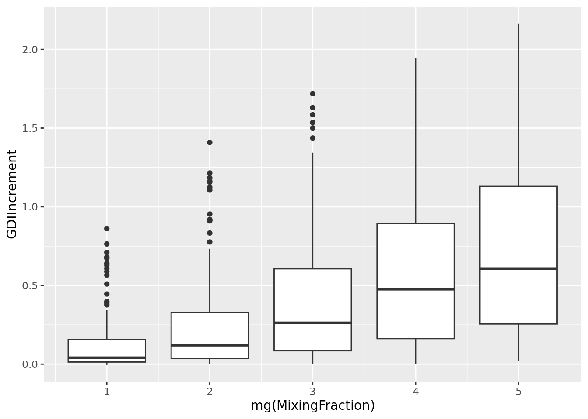
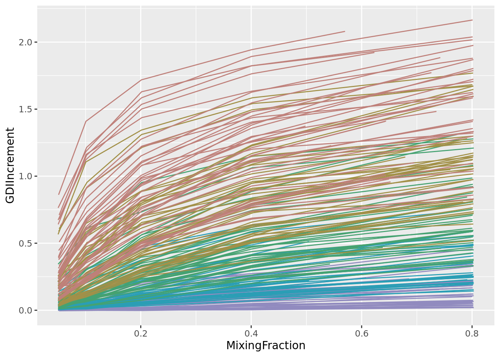
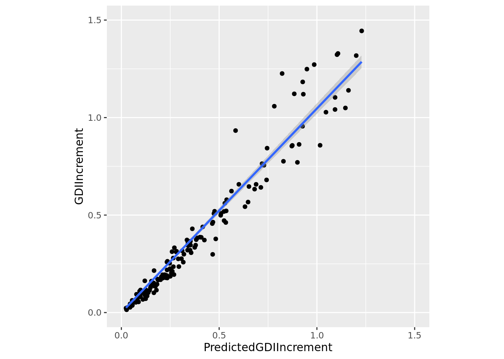

library(assertthat)
library(rlang)
library(scales)
library(ggplot2)
library(zeallot)
library(data.table)
library(COTAN)
library(parallelDist)
library(tibble)
library(tidyr)
options(parallelly.fork.enable = TRUE)
inDir <- file.path("Data/MouseCortexFromLoom/")
outDir <- file.path("Results/GDI_Sensitivity")
if (!file.exists(outDir)) {
dir.create(outDir)
}
setLoggingLevel(2)
setLoggingFile(file.path(outDir, "MixingClustersGDI_ForebrainDorsal.log"))Mixing Uniform Clusters To Estimate GDI Sensitivity
Preamble
Loading all COTAN Objects
fb135Obj <- readRDS(file = file.path(inDir, "e13.5_ForebrainDorsal.cotan.RDS"))
getMetadataElement(fb135Obj, datasetTags()[["cond"]])
fb150Obj <- readRDS(file = file.path(inDir, "e15.0_ForebrainDorsal.cotan.RDS"))
getMetadataElement(fb150Obj, datasetTags()[["cond"]])
fb175Obj <- readRDS(file = file.path(inDir, "e17.5_ForebrainDorsal.cotan.RDS"))
getMetadataElement(fb175Obj, datasetTags()[["cond"]])Relevant clusters lists
Merge clusters from different datasets
allGenes <- union(union(getGenes(fb135Obj), getGenes(fb150Obj)), getGenes(fb175Obj))
# This function completes the raw data so that the genes list
# matches the `allGenes` above
fillGenes <- function(m, prefixName) {
# find the missing genes in the given matrix m
missingGenes <- !(allGenes %in% rownames(m))
# create a matrix with the right sizes for the missing genes
# and set their values all to zero
fillM <- matrix(0, nrow = sum(missingGenes), ncol = ncol(m))
rownames(fillM) <- allGenes[missingGenes]
# append the new matrix to the original and reorder the rows
# to match overall genes order
retM <- rbind(m, fillM)
retM <- retM[allGenes, ]
# assign unique identifiers to the columns, so that one can discriminate
# the source even after merging with other matrices
colnames(retM) <- paste0(prefixName, "_", colnames(retM))
return(retM)
}Create all raw data for each cluster compatible with the full genes’ list
allClustersRawData <- list()
for (dsName in names(selected)) {
clList <- toClustersList(getClusters(objSelector(dsName),
clName = "original.clusters"))
for (clName in selected[[dsName]]) {
fullName <- paste0(dsName, ":", clName)
fullRawData <- fillGenes(getRawData(objSelector(dsName))[, clList[[clName]]],
fullName)
allClustersRawData <- append(allClustersRawData, list(fullRawData))
names(allClustersRawData)[length(allClustersRawData)] <- fullName
}
}
assert_that(identical(rownames(allClustersRawData[[1]]), allGenes))
# delete the COTAN objects
rm(fb135Obj, fb150Obj, fb175Obj)Collect size and GDI for all selected clusters (baseline data)
clDataFB135 <- readRDS(file.path(inDir, "e13.5_ForebrainDorsal_GDI_of_original_clusterization.RDS"))
clDataFB150 <- readRDS(file.path(inDir, "e15.0_ForebrainDorsal_GDI_of_original_clusterization.RDS"))
clDataFB175 <- readRDS(file.path(inDir, "e17.5_ForebrainDorsal_GDI_of_original_clusterization.RDS"))
df1 <- clDataFB135[selected[["E13.5"]], c("size", "X1stPercentile"), drop = FALSE]
rownames(df1) <- paste0("E13.5:", rownames(df1))
df2 <- clDataFB150[selected[["E15.0"]], c("size", "X1stPercentile"), drop = FALSE]
rownames(df2) <- paste0("E15.0:", rownames(df2))
df3 <- clDataFB175[selected[["E17.5"]], c("size", "X1stPercentile"), drop = FALSE]
rownames(df3) <- paste0("E17.5:", rownames(df3))
baselineGDI <- rbind(df1, df2, df3)
colnames(baselineGDI) <- c("size", "GDI")
rm(clDataFB135, clDataFB150, clDataFB175)
rm(df1, df2, df3)
saveRDS(baselineGDI,
file = file.path(outDir, "ForebrainDorsal_ClusterizationMixing_BaselineGDI.RDS"))Load baseline data
baselineGDI <- readRDS(file.path(outDir, "ForebrainDorsal_ClusterizationMixing_BaselineGDI.RDS"))
# check good alignment of data
assert_that(identical(rownames(baselineGDI), names(allClustersRawData)))
assert_that(identical(baselineGDI[, "size"],
vapply(allClustersRawData, ncol,
FUN.VALUE = integer(1L), USE.NAMES = FALSE)))Calculate the GDI of the mixtures of clusters
This is to be run once per wanted mixing-fraction
# small run
#
set.seed(137)
mixingFraction <- 0.80
mixingStr <- str_pad(scales::label_percent()(mixingFraction), 3, pad = "0")
results <- data.frame()
for (mainName in rownames(baselineGDI)) {
mainSize <- baselineGDI[mainName, "size"]
mainGDI <- baselineGDI[mainName, "GDI"]
for (clName in rownames(baselineGDI)) {
if (clName == mainName) next
logThis(paste("Mixing", mainName, "with extra",
mixingStr, "cells from", clName), logLevel = 1)
clSize <- baselineGDI[clName, "size"]
actuallyMixedCells <- min(ceiling(mixingFraction * mainSize), clSize)
actualFraction <- actuallyMixedCells / mainSize
sampleRawData <- allClustersRawData[[clName]][, sample(clSize, actuallyMixedCells)]
mergedRawData <- cbind(allClustersRawData[[mainName]], sampleRawData)
rm(sampleRawData)
# Calculate the merged COEX
cond <- paste0(mainName, "|", mixingStr, "|", clName)
mergedObj <- automaticCOTANObjectCreation(raw = mergedRawData,
GEO = "MergedClusters",
sequencingMethod = "10X",
sampleCondition = cond,
calcCoex = TRUE, cores = 10L,
saveObj = FALSE, outDir = outDir)
rm(mergedRawData)
# Extract the GDI quantile
mergedGDIData <- calculateGDI(mergedObj)
rm(mergedObj)
gdi <- mergedGDIData[["GDI"]]
names(gdi) <- rownames(mergedGDIData)
rm(mergedGDIData)
gdi <- sort(gdi, decreasing = TRUE)
lastPercentile <- quantile(gdi, probs = 0.99)
rm(gdi)
results <- rbind(results,
data.frame("MainCluster" = mainName, "OtherCluster" = clName,
"MixingFraction" = actualFraction, "GDI" = lastPercentile,
"GDIIncrement" = lastPercentile - mainGDI))
logThis(paste("Mixing", mainName, "with", clName,
"accomplished with GDI", lastPercentile), logLevel = 1)
}
}
rownames(results) <- NULL
saveRDS(results, file.path(outDir, paste0("GDI_with_", mixingStr, "_Mixing.RDS")))Load calculated data for analysis
Merge all results and calculate the fitting regression for each cluster pair
Recall cluster distance and add it to the results
#zeroOneAvg <- readRDS(file.path(inDir, "ClustersDistances", "allZeroOne.RDS"))
zeroOneAvg <- readRDS(file.path(outDir, "distanceZeroOne.RDS"))
distZeroOne <- as.matrix(parDist(t(zeroOneAvg), method = "hellinger", diag = TRUE, upper = TRUE))^2
distZeroOneLong <- rownames_to_column(as.data.frame(distZeroOne), var = "MainCluster")
distZeroOneLong <-pivot_longer(distZeroOneLong,
cols = !MainCluster,
names_to = "OtherCluster",
values_to = "Distance")
distZeroOneLong <- as.data.frame(distZeroOneLong[distZeroOneLong[["Distance"]] != 0.0, ])
#assert_that(identical(distZeroOneLong[, 1:2], resMix20[, 1:2]))
perm <- order(distZeroOneLong[["Distance"]])# Scatter plot of the effective increment [Y] against estimated increment [X]
distDF <- cbind(distZeroOneLong[, "Distance", drop = FALSE],
sqrt(distZeroOneLong[, "Distance", drop = FALSE]))
colnames(distDF) <- c("Distance", "DistanceSqrt")
D2IPlot <- ggplot(cbind(resMix40, distDF),
aes(x=Distance, y=GDIIncrement)) +
geom_point() +
geom_smooth(method=lm, formula = y ~ x)
# + xlim(0, 1.5) + ylim(0, 1.5) + coord_fixed()
plot(D2IPlot)Merge all data and plot it using a-priory (squared) distance as discriminant
allRes <- rbind(resMix05[perm, ], resMix10[perm, ], resMix20[perm, ], resMix40[perm, ], resMix80[perm, ])
rownames(allRes) <- NULL
allRes <- cbind(allRes, "ClusterPair" = rep.int(c(1:210),5))
allRes <- cbind(allRes, "Distance" = rep(distZeroOneLong[["Distance"]][perm], 5))mg <- function(mixing) { ceiling(log2(round(mixing*40))) }
IScPlot <- ggplot(allRes, aes(x=mg(MixingFraction), y=GDIIncrement, color=Distance,
group = mg(MixingFraction))) +
# geom_point() +
geom_boxplot()
# scale_color_continuous(type = "viridis") +
# geom_point(aes(size=log10(GDIIncrement+10))) +
# scale_x_log10()
plot(IScPlot)
perm2 <- rep(1:210, each = 5) + rep(seq(1, 5 * 210, by = 210), times = 5) - 1
allRes2 <- allRes[perm2, ]
# c(1,44) - c(84,127) - c(167,210)
ILinesPLot <- ggplot(allRes2[allRes2[["ClusterPair"]] %between% c(1,210), ],
aes(x = MixingFraction, y = GDIIncrement,
color = (ClusterPair - 1) %/% 42 + 0.5)) +
geom_path(aes(group = ClusterPair)) +
theme(legend.position = "none") +
#scale_x_log10() +
scale_colour_stepsn(colours = hcl.colors(5, palette = "Dark 2")[5:1])
plot(ILinesPLot)
Calculate the GDI of the mixtures of three clusters
the total mixture is 20%
# small run
#
set.seed(137)
numPairsPerCluster <- 10
mixingFraction <- 0.20
results <- data.frame()
for (mainName in rownames(baselineGDI)) {
mainSize <- baselineGDI[mainName, "size"]
mainGDI <- baselineGDI[mainName, "GDI"]
executedPairs <- NULL
for (i in c(1:numPairsPerCluster)) {
repeat {
clPair <- rownames(baselineGDI)[sample(nrow(baselineGDI), 2)]
clPair <- clPair[order(clPair)]
clPairName <- paste0(clPair[[1L]], ":", clPair[[2L]])
if (!(mainName %in% clPair) && !(clPairName %in% executedPairs)) break
}
logThis(paste("Mixing", mainName, "with extra 20% cells from",
clPair[[1L]], "and", clPair[[2L]]), logLevel = 1)
mixingFraction1 <- runif(1L, 0.25 * mixingFraction, 0.75 * mixingFraction)
mixingFraction2 <- mixingFraction - mixingFraction1
clSize1 <- baselineGDI[clPair[[1L]], "size"]
clSize2 <- baselineGDI[clPair[[2L]], "size"]
actuallyMixedCells1 <- min(ceiling(mixingFraction1 * mainSize), clSize1)
actuallyMixedCells2 <- min(ceiling(mixingFraction2 * mainSize), clSize2)
actualFraction1 <- actuallyMixedCells1 / mainSize
actualFraction2 <- actuallyMixedCells2 / mainSize
sampleRawData1 <- allClustersRawData[[clPair[[1L]]]][, sample(clSize1, actuallyMixedCells1)]
sampleRawData2 <- allClustersRawData[[clPair[[2L]]]][, sample(clSize2, actuallyMixedCells2)]
mergedRawData <- cbind(allClustersRawData[[mainName]], sampleRawData1, sampleRawData2)
rm(sampleRawData1, sampleRawData2)
# Calculate the merged COEX
cond <- paste0(mainName, "|20%|", clPairName)
mergedObj <- automaticCOTANObjectCreation(raw = mergedRawData,
GEO = "MergedClusters",
sequencingMethod = "10X",
sampleCondition = cond,
calcCoex = TRUE, cores = 10L,
saveObj = FALSE, outDir = outDir)
rm(mergedRawData)
# Extract the GDI quantile
mergedGDIData <- calculateGDI(mergedObj)
rm(mergedObj)
gdi <- mergedGDIData[["GDI"]]
names(gdi) <- rownames(mergedGDIData)
rm(mergedGDIData)
gdi <- sort(gdi, decreasing = TRUE)
lastPercentile <- quantile(gdi, probs = 0.99)
rm(gdi)
results <- rbind(results,
data.frame("MainCluster" = mainName,
"OtherCluster1" = clPair[[1L]],
"MixingFraction1" = actualFraction1,
"OtherCluster2" = clPair[[2L]],
"MixingFraction2" = actualFraction2,
"GDI" = lastPercentile,
"GDIIncrement" = lastPercentile - mainGDI))
logThis(paste("Mixing", mainName, "with", clPairName,
"accomplished with GDI", lastPercentile), logLevel = 1)
}
}
rownames(results) <- NULL
saveRDS(results, file.path(outDir, paste0("GDI_with_20%_Mixing_from_Pairs.RDS")))Estimate predicted GDI increment using resultts from two-clusters mixings
The estimates assume GDI increment proportional to mixture
resMix20_2 <- readRDS(file.path(outDir, paste0("GDI_with_20%_Mixing_from_Pairs.RDS")))
resMix20_2 <- cbind(resMix20_2, NA)
colnames(resMix20_2)[ncol(resMix20_2)] <- "PredictedGDIIncrement"
for (r in c(1:nrow(resMix20_2))) {
mainName <- resMix20_2[r, "MainCluster"]
mainMatch20 <- resMix20[resMix20[, "MainCluster"] == mainName, ]
pos1 <- which(mainMatch20[, "OtherCluster"] == resMix20_2[r, "OtherCluster1"])
pos2 <- which(mainMatch20[, "OtherCluster"] == resMix20_2[r, "OtherCluster2"])
GDIIncr1 <- mainMatch20[pos1, "GDIIncrement"]
GDIIncr2 <- mainMatch20[pos2, "GDIIncrement"]
w1 <- resMix20_2[r, "MixingFraction1"] / mainMatch20[pos1, "MixingFraction"]
w2 <- resMix20_2[r, "MixingFraction2"] / mainMatch20[pos2, "MixingFraction"]
predictedGDIIncr <- (w1 * GDIIncr1 + w2 * GDIIncr2)
resMix20_2[r, "PredictedGDIIncrement"] <- predictedGDIIncr
}
saveRDS(resMix20_2, file.path(outDir, paste0("GDI_with_20%_Mixing_from_Pairs.RDS")))Load calculated data for analysis
Compare estimated vs real GDI increment
# Scatter plot of the effective increment [Y] against estimated increment [X]
pg <- ggplot(resMix20_2, aes(x=PredictedGDIIncrement, y=GDIIncrement)) +
geom_point() +
geom_smooth(method=lm, formula = y ~ x + 0) +
coord_fixed() +
xlim(0, 1.5) + ylim(0, 1.5)
#scale_x_log10() + scale_y_log10()
plot(pg)
The plot shows that having the 20% extraneous cells in the mixture coming from multiple clusters does not affect significantly the sensitivity of the GDI to score cluster uniformity.
sessionInfo()R version 4.3.2 (2023-10-31)
Platform: x86_64-pc-linux-gnu (64-bit)
Running under: Ubuntu 20.04.6 LTS
Matrix products: default
BLAS: /usr/lib/x86_64-linux-gnu/blas/libblas.so.3.9.0
LAPACK: /usr/lib/x86_64-linux-gnu/lapack/liblapack.so.3.9.0
locale:
[1] LC_CTYPE=C.UTF-8 LC_NUMERIC=C LC_TIME=C.UTF-8
[4] LC_COLLATE=C.UTF-8 LC_MONETARY=C.UTF-8 LC_MESSAGES=C.UTF-8
[7] LC_PAPER=C.UTF-8 LC_NAME=C LC_ADDRESS=C
[10] LC_TELEPHONE=C LC_MEASUREMENT=C.UTF-8 LC_IDENTIFICATION=C
time zone: Europe/Rome
tzcode source: system (glibc)
attached base packages:
[1] stats graphics grDevices utils datasets methods base
other attached packages:
[1] tidyr_1.3.0 tibble_3.2.1 parallelDist_0.2.6 COTAN_2.3.0
[5] data.table_1.14.8 zeallot_0.1.0 ggplot2_3.4.2 scales_1.3.0
[9] rlang_1.1.1 assertthat_0.2.1
loaded via a namespace (and not attached):
[1] RcppAnnoy_0.0.21 splines_4.3.2
[3] later_1.3.1 polyclip_1.10-4
[5] fastDummies_1.7.3 lifecycle_1.0.3
[7] doParallel_1.0.17 globals_0.16.2
[9] lattice_0.22-5 MASS_7.3-60
[11] dendextend_1.17.1 magrittr_2.0.3
[13] plotly_4.10.2 rmarkdown_2.24
[15] yaml_2.3.7 httpuv_1.6.11
[17] Seurat_5.0.0 sctransform_0.4.1
[19] spam_2.10-0 askpass_1.2.0
[21] sp_2.1-1 spatstat.sparse_3.0-2
[23] reticulate_1.34.0 cowplot_1.1.1
[25] pbapply_1.7-2 RColorBrewer_1.1-3
[27] abind_1.4-5 Rtsne_0.16
[29] purrr_1.0.1 BiocGenerics_0.46.0
[31] circlize_0.4.15 IRanges_2.34.1
[33] S4Vectors_0.38.1 ggrepel_0.9.3
[35] irlba_2.3.5.1 listenv_0.9.0
[37] spatstat.utils_3.0-3 umap_0.2.10.0
[39] goftest_1.2-3 RSpectra_0.16-1
[41] spatstat.random_3.2-1 dqrng_0.3.0
[43] fitdistrplus_1.1-11 parallelly_1.36.0
[45] DelayedMatrixStats_1.22.5 leiden_0.4.3
[47] codetools_0.2-19 DelayedArray_0.26.7
[49] tidyselect_1.2.0 shape_1.4.6
[51] farver_2.1.1 ScaledMatrix_1.8.1
[53] viridis_0.6.4 matrixStats_1.2.0
[55] stats4_4.3.2 spatstat.explore_3.2-1
[57] jsonlite_1.8.7 GetoptLong_1.0.5
[59] ellipsis_0.3.2 progressr_0.14.0
[61] ggridges_0.5.4 survival_3.5-7
[63] iterators_1.0.14 foreach_1.5.2
[65] tools_4.3.2 ica_1.0-3
[67] Rcpp_1.0.11 glue_1.6.2
[69] gridExtra_2.3 xfun_0.39
[71] mgcv_1.9-1 MatrixGenerics_1.12.3
[73] ggthemes_5.0.0 dplyr_1.1.2
[75] withr_2.5.0 fastmap_1.1.1
[77] fansi_1.0.4 openssl_2.1.0
[79] digest_0.6.33 rsvd_1.0.5
[81] R6_2.5.1 mime_0.12
[83] colorspace_2.1-0 scattermore_1.2
[85] tensor_1.5 spatstat.data_3.0-1
[87] utf8_1.2.3 generics_0.1.3
[89] httr_1.4.6 htmlwidgets_1.6.2
[91] S4Arrays_1.2.0 uwot_0.1.16
[93] pkgconfig_2.0.3 gtable_0.3.3
[95] ComplexHeatmap_2.16.0 lmtest_0.9-40
[97] htmltools_0.5.7 dotCall64_1.1-0
[99] clue_0.3-64 SeuratObject_5.0.0
[101] png_0.1-8 knitr_1.43
[103] rstudioapi_0.15.0 reshape2_1.4.4
[105] rjson_0.2.21 nlme_3.1-163
[107] zoo_1.8-12 GlobalOptions_0.1.2
[109] stringr_1.5.0 KernSmooth_2.23-22
[111] parallel_4.3.2 miniUI_0.1.1.1
[113] RcppZiggurat_0.1.6 pillar_1.9.0
[115] grid_4.3.2 vctrs_0.6.3
[117] RANN_2.6.1 promises_1.2.0.1
[119] BiocSingular_1.16.0 beachmat_2.16.0
[121] xtable_1.8-4 cluster_2.1.6
[123] evaluate_0.21 cli_3.6.1
[125] compiler_4.3.2 crayon_1.5.2
[127] future.apply_1.11.0 labeling_0.4.2
[129] plyr_1.8.8 stringi_1.8.1
[131] viridisLite_0.4.2 deldir_2.0-2
[133] BiocParallel_1.34.2 munsell_0.5.0
[135] lazyeval_0.2.2 spatstat.geom_3.2-4
[137] PCAtools_2.14.0 Matrix_1.6-3
[139] RcppHNSW_0.5.0 patchwork_1.1.2
[141] sparseMatrixStats_1.12.2 future_1.33.0
[143] shiny_1.8.0 ROCR_1.0-11
[145] Rfast_2.1.0 igraph_1.6.0
[147] RcppParallel_5.1.7